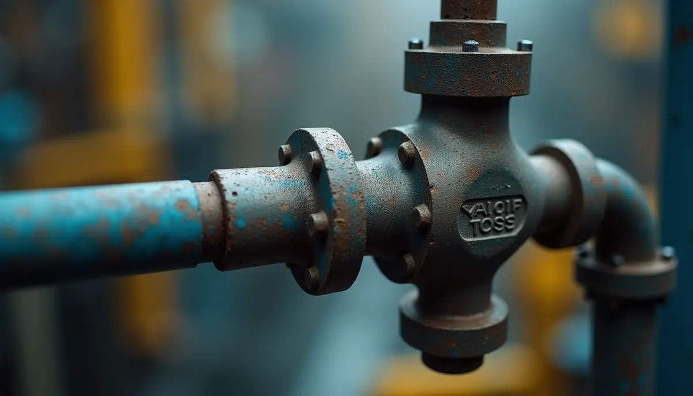
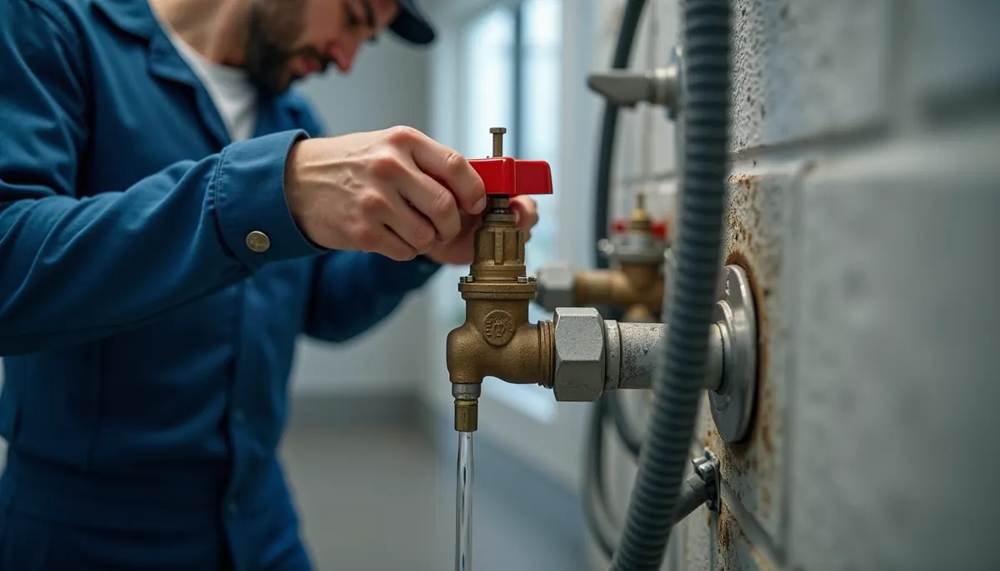

It seems so simple, doesn't it? That little valve under your sink or behind your toilet, controlling the water flow. It's called an angle stop valve. But if it starts to leak or gets stuck, you might think replacing it is a quick and easy fix. However, choosing the wrong angle stop valve can lead to major problems, messy repairs, and high costs down the line.
At Angle Stop Plumbing, we have witnessed countless disasters caused by homeowners and some inexperienced professionals installing incorrect angle stop valves. Although they may look alike, even slight differences can lead to significant consequences.
The Damage Potential: It's More Than Just a Drip
You might wonder, "What's the big deal? It's just a valve." Unfortunately, that's where the danger lies.
Incompatible Materials Leading to Leaks
Not all angle stop valves are created equal. Mixing different metals can lead to galvanic corrosion, a process that causes the valve to weaken and leak over time. For instance, if you combine brass and galvanized steel, the brass can corrode quickly, leading to a leak. A small drip today can become a constant stream tomorrow, damaging cabinets, floors, and even your home's foundation. According to statistics from the Environmental Protection Agency (EPA), leaks can account for nearly 10,000 gallons of water wasted annually in an average household.

Incorrect Compression or Connection Types
Angle stop valves come with various connection types, including compression, PEX, and sweat. Using the wrong type or poorly installing the correct type can create a weak seal, making it susceptible to leaks under pressure. For example, an old copper pipe connected with a compression fitting to a PEX valve may result in a failure if the connection isn’t secure, allowing water to escape.
Pressure Rating Mismatch
Every plumbing component is designed to endure a specific water pressure. Using a valve not rated for your home’s water pressure can lead to failure or even bursts. An overwhelming 52% of homeowners report experiencing water damage from burst pipes. Picture returning home from vacation to find your kitchen flooded—this nightmare is often avoidable with the right valve.
Reduced Water Flow and Efficiency
While this issue may not lead to visible damage, choosing the wrong angle stop valve can significantly reduce water flow and efficiency. For example, a valve designed for lower pressures might limit water flow to fixtures like showers and sinks. This frustrating situation could lead to as much as a 30% decrease in water pressure, impacting your daily life.
The Consequences of Ignoring the Details
When it comes to plumbing, ignoring small details can lead to oversized problems. Keeping an improper valve in place is like keeping a ticking time bomb in your home.
Hidden Leaks: The Silent Destroyer
Many homeowners may not realize there's a problem until it’s too late. Hidden leaks can lead to serious issues like mold growth behind walls or under cabinets, creating not just a plumbing issue, but also a health hazard. In fact, according to the CDC, about 3.5 million allergic responses occur annually due to mold exposure. Sudden smells, mildew, or water stains often sign that something has gone wrong.
High Repair Costs
Choosing the wrong angle stop valve can result in severe water damage, leading to extensive and costly repairs. The costs of repairing water damage often exceed $2,000, which includes replacing drywall, flooring, and possibly even structural components. Addressing the issue upfront with the right valve will ultimately save you money and stress.
Solutions: How to Avoid the Disaster
So, how do you ensure you’re using the correct angle stop valve for your plumbing system? Here are some practical tips:
Know Your Existing Setup
Before replacing that old angle stop valve, take time to understand your current plumbing setup. Knowing the type of piping you have, whether it’s copper, PEX, or PVC, is crucial. Measure thread size, connection types, and materials carefully to ensure compatibility.
Choose Quality over Convenience
It may be tempting to grab the first valve you find at the store. However, investing in a high-quality valve made from compatible materials can save you much hassle and money in the long run. Research brands and read reviews to find the best options available.
Consult a Professional
If you’re uncertain about what to select, consult Angle Stop Plumbing, your local professional. They can provide guidance on the optimal choice for your specific needs, ensuring you choose a valve that will last and perform correctly.

Wrapping It Up: Don’t Let a Small Part Cause Big Damage!
Though an angle stop valve may seem insignificant, its importance is crucial to your plumbing system. The right valve ensures the efficient operation of your plumbing and protects your home from unnecessary damage and expense. Taking time to select the appropriate valve, considering materials and compatibility with your existing plumbing, can save you from considerable trouble in the future.
Stay informed, proactive, and protect your home with the right plumbing components. Because when it comes to plumbing, it is always better to be safe than sorry!